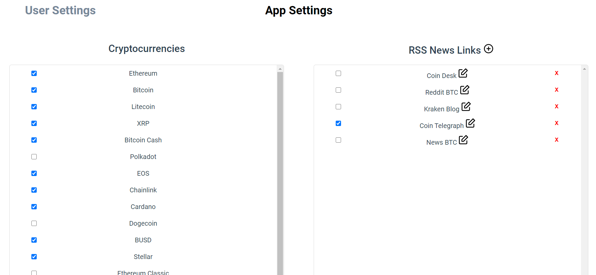
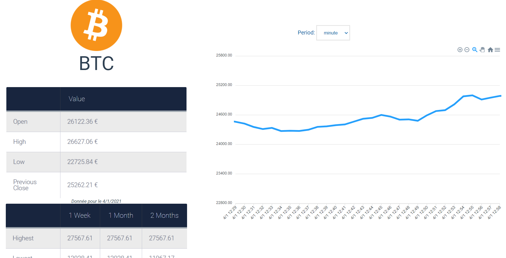
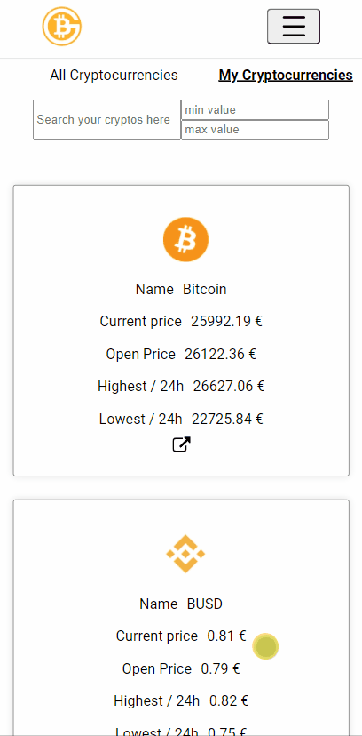

Count of money
I made this project for a web project at school.
I did it in 3 weeks and I did with 3 classmates.
This is a crypto currency stocks application.
In this app, we can lookup for crypto-currencies and see their values in numbers and graphs
We can also read latest articles about crypto currency and subscribe to crypto online newspapers
Main used technologies are NodeJs, Express.js with Firebase databse, Vue.js and Docker and Azure for deployment.
Count of money
J'ai réalisé ce projet pour un projet web à l'école.
C'était un projet en groupe qui a duré 3 semaines
C'est une application web de stocks de crypto-monnaies.
Dedans, on peut avoir les derniers cours des crypto-monnaies et leurs évolutions
On peut aussi lire les derniers articles des revues en ligne qui parlent de crypto-monnaie et s'y abonner.
Les principales technologies utilisées sont NodeJs, Express.js avec Firebase comme base de données, Vue.js pour le front et Docker et Azure pour le déploiement.
A brief presentation of main features
Présentation
Application architecture
Architecture de l'application
-The backend is an Express.js REST API. -The frontend is a Vue.js application that communicated with the API, but is completely separated from it. -Data is stored in a Firebase database.
-Le backend est une API REST utilisant Express.js. -Le frontend est une application Vue.js qui communique avec l'API mais qui en est séparée. -Les données sont stockées dans une base de données Firebase.
Login and register
Connexion et inscription

Users can login and signup from this form. This sends a sign in / signup request to the API that accepts or rejects it. When the user isn't authentified, all routes except Home and articles lead to this page, as only authentified users can access crypto stocks. Of course the application uses password hash and other security features...
Users can always change their informations in the settings page. They can also choose the crypto-currencies and keywords they are interested in so they always have an eye on their crypto values and better article suggestions.
Les utilisateurs peuvent se connecter et s'inscrire depuis ce formulaire . Il envoie une requete à l'API qui accepte ou pas la connexion / inscription. Quand l'utilisateur n'est pas authentifié tous les routes sauf l'index et la page des articles mènent à cette page, car il faut se connecter pour avoir accès aux cours des cryptos. L'application utilise des features de sécurité comme le hash etc...
Les utilisateurs peuvent ensuite changer leurs informations dans les paramêtres Ils peuvent aussi choisir les crypto-monnaies ainsi que les mots clé qui les interessent afin d'avoir toujours un oeil sur les valeurs de leurs cryptos et de meilleures suggestions d'articles.
Articles
Admin part
Partie admin
Admins can access an app settings page where they can choose the currencies that are visible to users or not, they can do the same to crypto magazines (RSS feeds in the picture), and create new ones and delete the existing.
Les admins peuvent avoir accès à une page de paramêtres de l'application dans laquelle ils peuvent selectionner les crypto-monnaies visibles par les utilisateurs, ils peuvent en faire de même pour les revues (RSS feeds dans la photo), ainsi qu'en rajouter de nouvelles ou en supprimer.
These are the journals that provide the different articles, the application retrieves them from RSS feeds registered by the admins and stores them in the database, it updates them every hour.
Ce sont ces revues qui fournissent les différents articles, l'application les récupère depuis des flux RSS enregistrés par les admins et les stock dans la base de données, elle les met à jour toutes les heures.
To do so, admins have to do the RSS feed mapping, because all RSS feeds are different, so I created a special tool that makes mapping very easy, fast and above all avoids making mistakes.
Pour faire cela, les admins doivent faire le mappage des flux RSS qu'ils ajoutent, parce que tous les flux RSS sont différents, j'ai donc créé un outil spécial qui rend le mapping très facile, rapide et surtout qui évite de faire des erreurs.
RSS Mapping tool
Outil de mappage RSS

Articles are then accessible in this page :
- Latest : Shows latest articles with a "see more" button in the bottom of the page.
- Keywords : Shows articles with user's saved keywords.
- Search : Searches for all articles that contain the keywords written by the user.
The user can click on an article to open it.
Les articles sont ensuite disponibles sur cette page :
- Latest : Liste les derniers articles avec un bouton "voir plus" en bas de page pour afficher la suite.
- Keywords : Montre tous les articles contenant les mots clé enregistrés par l'utilisateur.
- Search : Cherche dans les articles.
L'utilisateur peut cliquer sur un article pour l'afficher.

This opens it in a page like this :
Cela l'ouvre dans une page comme celle-ci

Currencies
Crypto-monnaies
Here's the crypto-currencies page. It lists all active (selected by the admin) currencies In the "my currencies" onglet the user can access his favorite currencies. It also has a search bar. The user can also access a currency's details by clicking it.
Voici la page des crypto-monnaies. Elle liste toutes les crypto-monnaies actives (par l'admin) Dans l'onglet "my currencies" l'utilisateur peut accéder à ses crypto-monnaies favorites Il y a aussi un outil recherche. L'utilisateur peut aussi accéder aux détails d'une crypto-monnaie en appuyant dessus.

Details :
Details :
Mobile
The application is fully responsive and adapts to device's screen.
L'application est responsive et s'adapte à l'écran de l'utilisateur.
